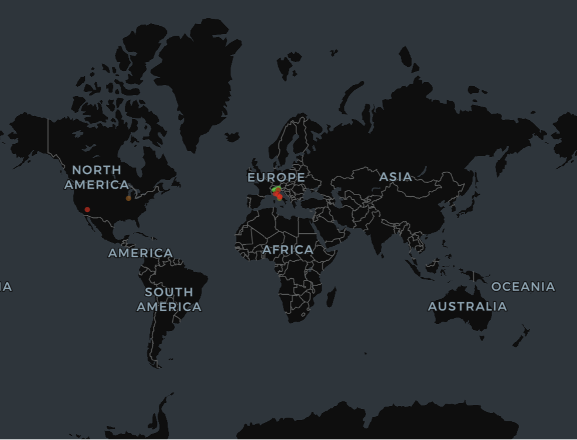

Results
This section presents qualitative results from the deployed Off-the-Beaten-Path Travel Recommender, using real queries and outputs generated through the live system. We compare retrieval behavior across models, beginning with a keyword-focused query designed to showcase BM25 performance.
Query 1: “hiking trails in the Dolomites Italy”
Selected Activities: hiking, camping, fishing, climbing Geographic Type: mountains
This query is intentionally structured with explicit keywords (activity + destination + country) to evaluate BM25’s lexical matching strengths.
BM25 Results
Top 10 Results Table
| Rank | Destination | Relevance Score | Notes |
|---|---|---|---|
| 1 | Alps | 46.63 | Exact keyword overlap with “Dolomites,” “Alps,” and “hiking” |
| 2 | Pieralongia (Dolomites) | 38.68 | Strong match on Dolomites landmarks and hiking terms |
| 3 | U.S. Virgin Islands | 37.59 | High activity overlap, but incorrect geography |
| 4 | Yosemite National Park | 37.40 | Mountain hiking content, but unrelated region |
| 5 | Canada | 36.50 | Broad hiking and camping mentions; country-level |
| 6 | Norway | 35.36 | Frequent hiking and mountain keywords |
| 7 | Hong Kong | 34.84 | Hiking-related content despite urban setting |
| 8 | Lake Hāwea (New Zealand) | 34.30 | Outdoor hiking narratives, but distant geography |
| 9 | Midwest (USA) | 33.71 | Seasonal outdoor activity content |
| 10 | Texas | 32.30 | Canyon hiking; strong activity terms |
Query 1 Map

Interpretation
BM25 performs very well at the top of the ranking, where results exhibit strong lexical overlap with the query terms. The first two destinations—Alps and Pieralongia—are both highly relevant and correctly grounded in the Dolomites region, demonstrating BM25’s effectiveness for explicit, structured queries.
However, beyond the top two results, relevance begins to degrade noticeably:
- Results 3–10 span a wide range of global destinations, including the Caribbean, North America, Scandinavia, East Asia, and Oceania.
- These entries are retrieved primarily due to frequent mentions of hiking, camping, or mountains, rather than alignment with the specific geographic constraint of Italy or the Dolomites.
- Several results (e.g., U.S. Virgin Islands, Texas) are geographically and climatically incompatible with alpine hiking, despite scoring highly.
This pattern highlights a key limitation of BM25: it treats each query term independently, without enforcing joint constraints across activity, terrain, and location.
LLM-Generated Explanations (Top Results)
The system’s explanation module further clarifies why each result was returned:
Alps: The explanation explicitly references hiking routes in the Dolomites, alpine trail systems, via ferrata climbing, and specific mountain towns used as hiking bases. This confirms a strong alignment between the query intent and the retrieved content.
Pieralongia: The explanation highlights Dolomites landmarks such as Seceda and Alpe di Siusi, emphasizing mountain meadows, hiking trails, and alpine terrain consistent with the query.
U.S. Virgin Islands: While the explanation correctly notes hiking, camping, and climbing opportunities, it also reveals a semantic mismatch: the destination satisfies activity intent but not geographic intent.
Key Takeaway (BM25)
This expanded result set demonstrates that BM25:
- Excels at precise keyword matching, especially at top ranks
- Performs well for explicit, structured queries
- Does not enforce semantic or geographic coherence across query components
- Produces increasingly noisy results as rank increases
These characteristics make BM25 a strong baseline for lexical relevance, but also motivate the use of semantic retrieval models like ModernBERT when contextual alignment and geographic coherence are important.
In the next section, these BM25 results can be compared directly against ModernBERT semantic retrieval, highlighting differences in ranking stability, error modes, and semantic generalization.
ModernBERT Results (Semantic Retrieval)
The same query — “hiking trails in the Dolomites Italy” — was executed using ModernBERT semantic retrieval via FAISS. Results are ranked by semantic distance in embedding space, where lower values indicate greater contextual similarity to the query.
### Top 10 Results Table
| Rank | Destination | Semantic Distance | Notes |
|---|---|---|---|
| 1 | Alps | 0.49 | Direct semantic match to hiking in the Dolomites |
| 2 | Pieralongia (Dolomites) | 0.50 | Highly specific Dolomites landmark with hiking focus |
| 3 | Rome (Abruzzo / Gran Sasso) | 0.57 | Mountain hiking in Italy; conceptually similar but wrong region |
| 4 | Chicago | 0.60 | Outdoor nature narrative, but weak mountain relevance |
| 5 | Italy | 0.62 | Broad country-level match; lacks destination specificity |
| 6 | Amalfi Coast | 0.64 | Italy travel content; coastal rather than mountainous |
| 7 | Cinque (Cinque Terre) | 0.64 | Hiking present, but coastal villages dominate |
| 8 | Florence | 0.65 | Tuscan countryside and hills; weak hiking specificity |
| 9 | Cinque Terre | 0.65 | Similar to rank 7; scenic hiking but not alpine |
| 10 | Italy | 0.66 | Generic Italy travel overview |
Lower distance values indicate higher semantic similarity.
Query 1 Map

Interpretation
ModernBERT demonstrates strong semantic precision at the top of the ranking, with the first two results aligning exactly with the intended destination and activity. Both Alps and Pieralongia are explicitly associated with hiking in the Dolomites, confirming that the embedding model successfully captures both geographic and experiential intent.
As rank increases, the results gradually broaden in semantic scope:
- Rank 3 (Rome / Abruzzo) remains contextually relevant due to descriptions of dolomite peaks, national parks, and rugged mountain hiking, even though it does not match the Dolomites geographically.
- Mid-ranked results (Chicago, Italy) reflect thematic overlap with outdoor exploration and travel narratives, but lack strong alignment with alpine hiking.
- Lower-ranked results (Amalfi Coast, Cinque Terre, Florence) emphasize scenic travel and light hiking, but shift away from mountainous terrain.
- Bottom-ranked results become increasingly generic, representing Italy-wide travel content rather than destination-specific hiking experiences.
This smooth degradation illustrates how ModernBERT prioritizes conceptual similarity first, gradually relaxing constraints as distance increases.
LLM-Generated Explanations (Top Results)
The explanation module provides additional insight into the semantic ranking:
Alps: The explanation references specific Dolomites hiking trails (e.g., Roda de Pütia, San Lorenzo), via ferrata routes, alpine lodges, and climbing opportunities, confirming a near-perfect match to the query intent.
Pieralongia: The explanation highlights iconic Dolomites landmarks such as Seceda, Pieralongia rocks, and Alpe di Siusi, as well as hiking routes and alpine meadows near Ortisei in Val Gardena.
Rome (Abruzzo / Gran Sasso): Although geographically incorrect, the explanation reveals why this result appears: the blog post discusses dolomite peaks, rugged mountains, and hiking trails within Gran Sasso National Park, demonstrating semantic rather than lexical matching.
Key Takeaway (ModernBERT)
This full ranking demonstrates that ModernBERT:
- Strongly prioritizes semantic alignment at the top of results
- Preserves mountain hiking intent even when geography drifts
- Avoids activity-only false positives (e.g., tropical islands) seen in BM25
- Gradually relaxes specificity rather than introducing abrupt noise
Compared to BM25, ModernBERT produces a more coherent semantic ranking, where errors reflect conceptual similarity rather than unrelated keyword overlap. This behavior is especially well-suited for exploratory travel queries where intent matters more than strict lexical precision.
Query 2: “small seaside towns known for local food and slow travel”
Selected Activities: museums, swimming, sailing, eating Geographic Type: coastal, seaside, beach
This query is intentionally phrased to include descriptive experiential terms (“small,” “local food,” “slow travel”) while still containing clear coastal keywords, allowing us to evaluate how BM25 handles lifestyle-oriented intent using lexical matching alone.
BM25 Results
Top 10 Results Table
| Rank | Destination | Relevance Score | Notes |
|---|---|---|---|
| 1 | Maine | 49.55 | Strong lexical match on “coastal,” “beach towns,” and seaside language |
| 2 | Boston | 48.92 | Matches “towns near Boston,” coastal context implied |
| 3 | Grayton Beach | 42.11 | Explicit seaside town with food and beach activities |
| 4 | San Francisco | 40.61 | Urban coastal city; weak “small town” alignment |
| 5 | Santa Barbara | 39.89 | Coastal destination; more city-like than town |
| 6 | Florida (Seaside / 30A) | 39.47 | Strong beach and food overlap; region-level |
| 7 | Florida (30A region) | 39.46 | Similar to rank 6; repeated coastal keyword hits |
| 8 | Maine | 39.29 | Duplicate regional result; broad coastal framing |
| 9 | Astoria, Oregon | 38.12 | Small coastal town with cultural relevance |
| 10 | Boston | 37.61 | Duplicate regional entry |
Query 2 Map

Interpretation
BM25 performs well at identifying coastal and seaside-related destinations, as evidenced by the dominance of shoreline locations across the top 10 results. However, the ranking also reveals several important limitations when handling experiential intent:
- Broad regions and cities (e.g., Maine, Boston, San Francisco) are ranked above smaller towns, despite the query explicitly requesting small seaside towns.
- Duplicate regional entries (e.g., Maine, Florida, Boston) appear multiple times, indicating BM25’s sensitivity to repeated keyword mentions rather than destination granularity.
- While many results satisfy coastal criteria, fewer consistently satisfy slow travel or local food intent in a nuanced way.
Overall, BM25 emphasizes keyword density over interpretive intent, favoring documents that frequently mention “coastal,” “beach,” or “town,” regardless of scale or travel pace.
LLM-Generated Explanations (Top Results)
The explanation module provides insight into why the highest-ranked destinations were returned:
Maine: The explanation highlights small coastal towns such as Ogunquit, Kennebunkport, and Wells, emphasizing seafood-based local cuisine, museums like the Ogunquit Museum of American Art, and seaside activities including swimming and sailing. This confirms a strong lexical and thematic match, despite Maine being a broad regional label.
Boston: Although Boston itself is a major city, the explanation clarifies that the retrieved content focuses on nearby small coastal towns such as Rockport. These towns offer local food, art galleries, harbor sailing, and a slower pace of travel, partially aligning with the query intent.
Grayton Beach: The explanation emphasizes Grayton Beach’s small-town character along Florida’s Highway 30A, highlighting local eateries, relaxed beach culture, and slow-paced exploration. This represents one of the strongest town-level matches in the ranking.
Key Takeaway (BM25)
This example demonstrates that BM25:
- Effectively identifies coastal-related content
- Performs well when queries include clear descriptive keywords
- Tends to prioritize regions and cities over fine-grained destinations
- Does not explicitly model concepts like slow travel or local culture
- While BM25 surfaces many relevant coastal locations, it struggles to consistently enforce scale (small towns) and experiential intent, motivating the use of semantic retrieval to better capture nuanced travel preferences.
In the next section, these results can be directly compared against ModernBERT semantic retrieval to evaluate whether embedding-based search produces more town-specific and experience-aligned rankings.
ModernBERT Results (Semantic Retrieval)
The same query, “small seaside towns known for local food and slow travel”, was executed using ModernBERT semantic retrieval via FAISS. Results are ranked by semantic distance in embedding space, where lower values indicate stronger contextual similarity to the query.
Top 10 Results Table
| Rank | Destination | Semantic Distance | Notes |
|---|---|---|---|
| 1 | South Shore (MA) | 0.57 | Strong match to slow travel, coastal towns, and local culture |
| 2 | Maine | 0.61 | Small seaside towns with food, museums, and sailing |
| 3 | California | 0.62 | Small towns and hidden beaches; experiential alignment |
| 4 | Sydney | 0.62 | Coastal lifestyle and day trips; city-level |
| 5 | Salem (MA) | 0.62 | Historic coastal town with museums and walkability |
| 6 | France (La Rochelle / Île de Ré) | 0.63 | Seaside towns emphasizing slow travel and food |
| 7 | Italy | 0.64 | Cultural and culinary focus; broad geography |
| 8 | Florida (Seaside / 30A) | 0.64 | Coastal living and relaxed pace |
| 9 | Northern Michigan | 0.65 | Small coastal town with local character |
| 10 | Charleston | 0.66 | Historic coastal city; less “small town” |
Lower distance values indicate higher semantic similarity.
Query 2 Map

Interpretation
ModernBERT surfaces destinations that closely align with the experiential intent of the query, particularly slow travel, local food, and small coastal settings.
- The top-ranked result, South Shore, Massachusetts, strongly reflects the query’s intent by emphasizing quiet coastal towns, local museums, sailing programs, beach exploration, and a relaxed pace of travel.
- Maine and Northern Michigan appear due to their narrative emphasis on charming seaside towns, seafood-driven local cuisine, and low-density coastal environments.
- France (La Rochelle / Île de Ré) emerges as a strong semantic match despite geographic distance, reflecting ModernBERT’s ability to generalize the concept of slow seaside living across countries.
As ranking depth increases, results gradually broaden:
- City-level destinations (e.g., Sydney, Charleston) appear due to strong cultural and coastal narratives, despite partially violating the “small town” constraint.
- Country-level entries (California, Italy) reflect broader travel narratives emphasizing hidden towns and culinary experiences, but lack fine-grained destination specificity.
This gradual relaxation contrasts with BM25’s sharper drop-off into geographically irrelevant results.
LLM-Generated Explanations (Top Results)
The explanation module clarifies why ModernBERT prioritizes these results:
South Shore (Massachusetts): The explanation highlights towns such as Plymouth, Duxbury, and Sandwich, emphasizing slow-paced exploration, local museums, sailing camps, beach swimming, and food-centered community events—closely matching all aspects of the query.
Maine: The explanation references small coastal towns like Ogunquit and Camden, focusing on seafood cuisine, art museums, sailing, and relaxed seaside atmospheres consistent with slow travel.
California: The explanation focuses on small towns and hidden beaches, highlighting local food traditions, museums, and immersive stays that support slow travel, even when destinations are slightly inland.
Key Takeaway (ModernBERT)
This example demonstrates that ModernBERT:
- Captures experiential and lifestyle-oriented intent beyond keywords
- Prioritizes slow travel, local culture, and town-scale settings
- Produces semantically coherent results across geographies
- Relaxes geographic constraints gradually rather than abruptly
Compared to BM25, ModernBERT is more effective at modeling how a destination feels, making it better suited for exploratory travel queries where nuance, pace, and local culture matter more than exact keyword matches.